Lurui Wang1,2∗ Yongkang Cheng3∗ Can Xu1†
1College of Smart Agriculture (College of Artificial Intelligence), Nanjing Agricultural University
2Johns Hopkins University 3Mohamed bin Zayed University of Artificial Intelligence
lwang255@jh.edu, 2571642004@qq.com, xucan@njau.edu.cn
∗ Equal contribution. †Corresponding author.

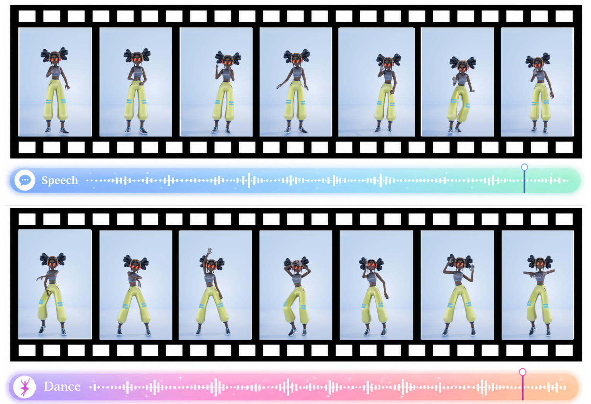
Abstract
Expressive performers resonate with audiences because they transform sound into motion: rhythm invites steps, prosody evokes gestures, and energy shapes the flow of the body. However, existing audio-driven character systems often reduce audio to a task-specific condition, separately optimizing for co-speech gestures or music-driven dance. This fragmented view overlooks audio as the shared perceptual driver of performance, making it difficult to generate coherent full-body motion across speaking, dancing, and their intermediate states. We present VoxPerformer, a unified audio-to-motion framework in which a single jointly trained model, given audio and a speech/music domain-token schedule, generates speech gestures, music-driven dance, and the transitions between them. Our key insight is that audio is not merely an external condition, but the hidden soul of performance style, governing how motion emerges, evolves, and transitions. To realize this, VoxPerformer introduces a structured motion prior to organize the full-body performance space, audio-to-prior distillation to transform sound into latent motion cues, a memory-augmented prior to resolve audio-motion ambiguity, and a decoupled diffusion generator with implicit transition matching for efficient and coherent synthesis. Experiments on BEAT2 and FineDance show that VoxPerformer remains competitive on speech-driven gesture generation while substantially improving hand-aware music-driven dance generation. On the controlled Transition-400 set, the joint model switches more coherently than stitched specialists. User studies further show that participants prefer VoxPerformer, indicating stronger audio-motion correspondence and more natural perceptual resonance.
1 Introduction
Humans do not merely hear sound; they move with it. A drumbeat invites steps, a melody shapes posture and balance, and spoken emphasis naturally evokes gestures. These reactions are not simple kinematic mimicry, but arise from auditory-motor resonance, where rhythm, prosody, energy, and intent are perceived as bodily cues before being consciously interpreted [Pranji´c et al., 2024, Proksch et al., 2020, Esteve-Gibert and Prieto, 2013]. Audio is therefore more than a carrier of meaning: it also suggests how to move, when to move, and with what expressive quality.
This ability is essential for virtual characters. A natural virtual performer should not only gesture while speaking or dance when music plays; it should move fluidly across speech, music, and intermediate performance states. However, existing audio-driven motion generation remains largely divided into isolated regimes. Speech-driven methods generate gestures aligned with semantics, prosody, and speaker style [Ginosar et al., 2019, Yoon et al., 2020, Li et al., 2021a, Liu et al., 2022c, Habibie et al., 2021, Yi et al., 2023, Liu et al., 2024a, Cheng and Huang, 2025], while music-driven methods synthesize dances matched to beats, styles, and choreography [Li et al., 2021b, Siyao et al., 2022, Li et al., 2023, Tseng et al., 2023, Li et al., 2024, Yang et al., 2025, Huang et al., 2021, Chen et al., 2021, Sun et al., 2021, Kim et al., 2022, Siyao et al., 2023].
Existing modeling paradigms further limit generalized performance generation. VAE- or VQ-VAE-based methods compress motion into latent spaces or discrete motion units, enabling efficient generation and reusable primitives [Li et al., 2021a, Yi et al., 2023, Liu et al., 2024a, Siyao et al., 2022, van den Oord et al., 2017, Siyao et al., 2023]. Yet, under the inherent one-to-many ambiguity of audio-conditioned motion, compressed representations may become overly smooth, lose details, or degrade in long sequences. Diffusion models better capture complex and multimodal motion distributions [Tseng et al., 2023, Li et al., 2024, Tevet et al., 2023, Ho et al., 2020, Zhang et al., 2024, Chen et al., 2023, Zhu et al., 2023a, Yang et al., 2024b], but they introduce higher inference cost and often remain tied to a single performance domain.
A deeper challenge lies in body-level entanglement. Audio-to-motion mapping is inherently one-to-many, and different body parts respond to audio at different granularities: the upper body expresses posture and affect, the hands encode fine semantic and rhythmic details, and the lower body maintains balance and global dynamics [Li et al., 2021a, Siyao et al., 2022, Tseng et al., 2023, Siyao et al., 2023]. Existing holistic gesture, fine-grained dance, and genre-aware methods improve motion realism through compositional priors, detailed body modeling, or structured style representations [Yi et al., 2023, Liu et al., 2024a, Cheng and Huang, 2025, Siyao et al., 2022, Li et al., 2023, Yang et al., 2025, Zhu et al., 2023b]. However, they still often couple heterogeneous body dynamics in a shared latent space or a single denoising distribution, allowing dominant torso or leg motion to overwhelm subtle hand articulation and destabilize cross-style transitions.
Based on these observations, we propose VOXPERFORMER, a unified audio-to-motion framework as a step toward generalized audio-driven performance. Our key insight is simple: sound should not merely condition motion; it should be given a body. In VOXPERFORMER, audio becomes the hidden driver of performance style, where rhythm, semantics, and energy shape how motion unfolds, transforms, and is perceived. To this end, we build structured part-aware motion priors, distill audio into latent motion cues, retrieve compatible memory priors, and use decoupled diffusion with implicit transition matching for efficient and coherent synthesis. This reframes audio-driven character animation from task-specific motion synthesis to unified responsive performance, enabling one model to generate speech gestures, music dances, and smooth cross-state transitions while turning virtual characters into embodied performers that hear rhythm, understand intent, and move with purpose.
Overall, our contributions can be summarized as follows:
· We propose VOXPERFORMER, a unified audio-to-motion framework that treats audio as a shared performance signal: one jointly trained model, given a speech/music domain-token schedule, organizes speech-driven gestures, music-driven dances, and cross-state transitions within a shared motion-prior space, without switching or stitching specialist generators.
· We introduce structured, part-aware motion priors with audio-driven latent guidance and memory-augmented retrieval. By decomposing full-body motion into upper body, hands, and lower body, VOXPERFORMER builds compositional latent representations and retrieves compatible part-level motion prototypes to alleviate one-to-many audio-motion ambiguity.
· We design a decoupled diffusion generator with implicit transition matching for expressive and efficient full-body motion synthesis. Experiments on BEAT2 and FineDance show that VOXPERFORMER remains competitive on speech-driven gestures, substantially improves hand-aware music-driven dance generation, and achieves stronger audio-motion correspondence and perceptual resonance in user studies.
2 Related Work
2.1 Audio-driven human motion generation
Audio-driven human motion generation has mainly evolved along two isolated regimes: speech-driven co-speech gesture generation and music-driven dance generation. Co-speech methods synthesize body motion aligned with speech content, rhythm, and speaker style. Early works learn conversational gestures from video or combine speech with text and speaker identity [Ginosar et al., 2019, Yoon et al., 2020, Li et al., 2021a, Liu et al., 2022c]. Recent systems extend from upper-body gestures to holistic virtual speakers, generating body, hands, face, and global motion with larger datasets, masked modeling, motion priors, or diffusion-based designs [Habibie et al., 2021, Yi et al., 2023, Liu et al., 2024a, Cheng and Huang, 2025]. Music-driven dance generation forms a parallel branch. Existing works establish music-dance benchmarks, learn choreographic tokens, introduce fine-grained hand motion and genre diversity, and use diffusion or mixture-of-experts designs for editable, long-horizon, or genre-aware dance generation [Li et al., 2021b, Siyao et al., 2022, 2023, Li et al., 2023, Tseng et al., 2023, Li et al., 2024, Yang et al., 2025]. Earlier systems also explore long-term synthesis, style matching, and music-dance retrieval [Huang et al., 2021, Chen et al., 2021, Sun et al., 2021, Kim et al., 2022]. Overall, existing audio-to-motion methods are task-defined rather than performance-defined: speech models learn talking gestures, while dance models learn music-driven choreography. This separation misses audio as the shared perceptual source linking rhythm, prosody, energy, and intent to bodily motion, leaving no unified performance-level foundation for speaking, dancing, hybrid behaviors, and cross-state transitions.
2.2 Motion priors and diffusion models
Motion priors reduce the difficulty of directly generating high-dimensional human motion. VQ-VAE learns discrete latent codes for complex data [van den Oord et al., 2017], and has been used in gesture and dance generation to build reusable motion units or compositional motion spaces [Yi et al., 2023, Liu et al., 2024a, Siyao et al., 2022, 2023]. These priors improve stability and efficiency, but are usually domain-specific: speech priors encode conversational gestures, while dance priors encode choreographic units. A single full-body latent space can also mix heterogeneous dynamics, allowing dominant torso or leg motion to suppress fine hand articulation or lower-body stability. Existing holistic gesture, fine-grained dance, genre-aware dance, and motion representation works suggest that structured representations are important for preserving fidelity and detailed expressiveness [Liu et al., 2024a, Cheng and Huang, 2025, Li et al., 2023, Yang et al., 2025, Zhu et al., 2023b]. Meanwhile, diffusion models have strong capacity for complex and multimodal motion distributions [Ho et al., 2020, Tevet et al., 2023, Zhang et al., 2024, Chen et al., 2023], and have been applied to audio-driven gestures and dances with richer and more diverse results than deterministic regression or VAE-based methods [Zhu et al., 2023a, Tseng et al., 2023, Li et al., 2024, Yang et al., 2024b]. However, standard diffusion requires many denoising steps and introduces substantial inference cost. More importantly, most diffusion-based motion generators remain task-specific and often denoise the whole body as one distribution, making it difficult to jointly preserve hand articulation, upper-body expression, lower-body dynamics, and smooth cross-style transitions within a unified performance space.

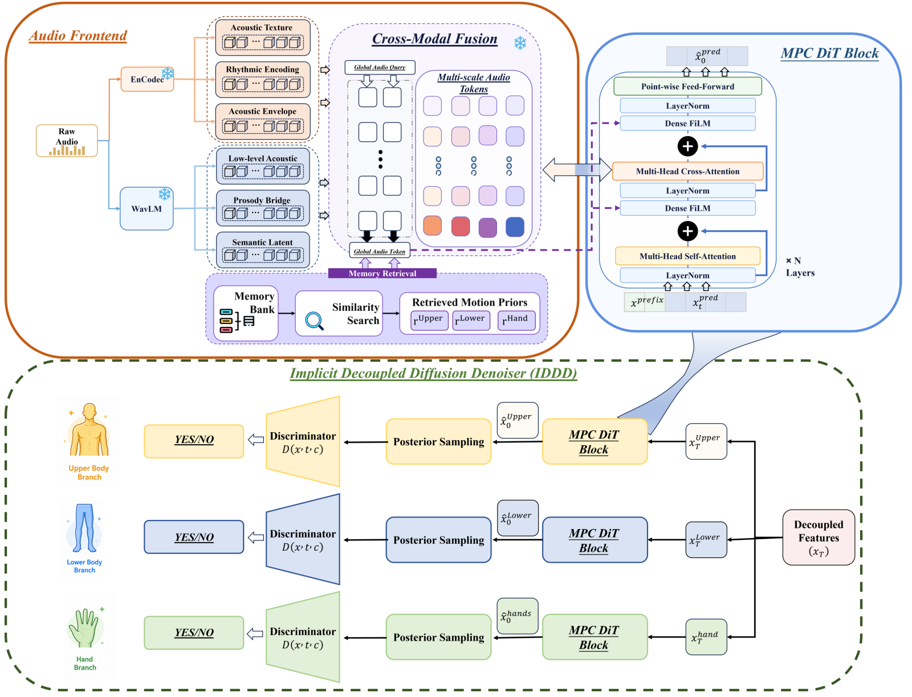
3 Method
3.1 Overview
Given audio a and a task/domain token ed, VOXPERFORMER synthesizes a full-body SMPL-X motion sequence x1:T by decomposing the body into P = {u, h, l}, denoting upper body, hands, and lower body. We generate motion through a structured motion-prior space.
As shown in Fig. 2, VOXPERFORMER contains three core designs: part-aware motion priors for heterogeneous body dynamics, audio-to-prior distillation with memory retrieval for one-to-many audio-motion ambiguity, and a decoupled diffusion generator with implicit transition matching for efficient, coordinated full-body synthesis.
Formally, VOXPERFORMER predicts clean motion with a compositional motion-prior prompt:

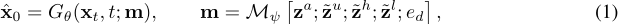
where m combines the audio-motion latent za , retrieved part priors {˜zp}p∈{u,h,l}, and task token ed.
Checkpoints. We train three main checkpoints with one design: speech-only (BEAT2), FineDance-only, and joint (BEAT2+FineDance); the formulation is written for the joint one. The single-domain checkpoints omit ed; in the joint one, ed follows a supplied speech/music schedule at inference.
3.2 Part-aware motion prior
To organize heterogeneous full-body dynamics, we first learn separate motion tokenizers for the upper body, hands, and lower body. For each part p ∈ P, an encoder Ep maps the motion xp to latent vectors zp , which are quantized by a learned codebook Cp = {cpk }Kp k=1 and decoded by Dp:

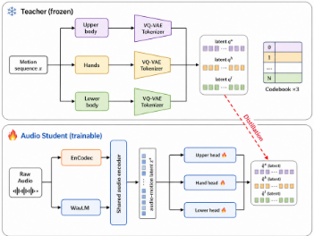

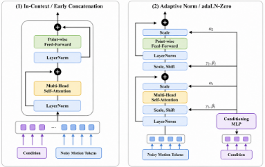

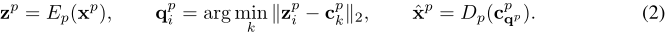
Here qp denotes the discrete motion codes, and each codebook stores reusable motion prototypes for a specific body region. This part-aware design prevents large-amplitude torso or lower-body motion from dominating fine hand articulation, while allowing the three latent spaces to be composed into full-body performance.
Each tokenizer is trained with reconstruction and temporal consistency constraints. Let FK(·) denote forward kinematics. For a reconstructed part motion ˆxp , we optimize

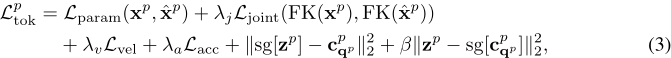
where sg[·] denotes stop-gradient. These losses preserve pose fidelity and temporal dynamics; frozen tokenizers then serve as motion-prior teachers for audio distillation and memory retrieval.
3.3 Audio-to-prior distillation and memory retrieval
Sound informs the body through meaning and pulse. We encode semantic and acoustic-rhythmic views with WavLM [Chen et al., 2022] and EnCodec [Défossez et al., 2023], then distill them into the frozen motion-prior space:

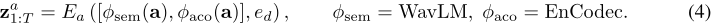
Here ed denotes the task/domain token distinguishing speech- and music-driven performance contexts.
As illustrated in Fig. 3, the frozen tokenizers provide part-level teacher targets, and the audio student predicts both discrete motion-code distributions and continuous code embeddings:

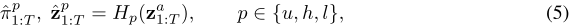
where ˆπp is a distribution over the part-specific codebook. Given the target codes qp and embeddings zp from the frozen motion tokenizers, the distillation objective is

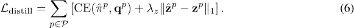
This objective forces audio features to recover both the discrete motion-prior codes and their embeddings for every body part.
To further align audio with the global structure of the learned motion-prior space, we compose the frozen part priors into a motion anchor:

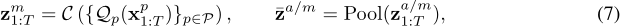
where Qp denotes the frozen tokenizer of part p, and C composes the part-aware priors into a shared latent anchor. We apply an implicit prior alignment objective:

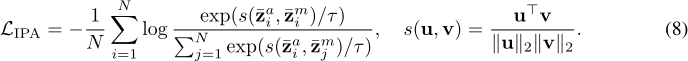
The final audio-prior objective is

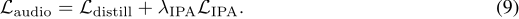
To address the one-to-many nature of audio-to-motion mapping, we augment the distilled prior with memory retrieval. The memory bank stores audio-aligned keys and part-level motion values:

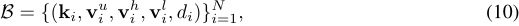
where di denotes the domain label. Given an audio query qt, we retrieve the top-k compatible entries and compute the part-specific prior:

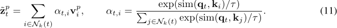
The retrieved priors provide concrete local motion prototypes, allowing the generator to select plausible motions. Keys are mean-pooled, L2-normalized audio latents za of 32-frame training chunks, and values store the corresponding quantized part latents with their code indices. Since Nk(t) may mix several motion modes, we replace it in Eq. (11) by a per-part code-consistent subset N p k (t): the neighbors whose codes match the α-weighted majority code on at least half of the frames, with α renormalized.
3.4 Motion-prior-conditioned decoupled diffusion
To synthesize coordinated full-body motion while preserving part-specific dynamics, we build a decoupled diffusion generator on the clean-motion prediction formulation. Following the MDM-style denoising view [Tevet et al., 2023], the model predicts the clean motion ˆx0 from noisy motion xt:

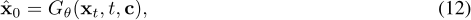
where c denotes the control condition. Predicting x0 enables direct motion-space supervision and is suitable for structured body motion generation.
Decoupled denoiser. Directly denoising the whole body as one vector ignores the different audio dependencies of body parts. Upper-body gestures are strongly related to rhythm and emphasis, hands require high-frequency semantic and rhythmic articulation, and lower-body motion is tied to balance and global dynamics. We therefore decouple denoising into upper-body, hand, and lower-body branches:

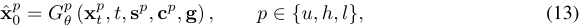
where sp denotes the prefix motion, cp = [za , ˜zp , ed] is the part-specific condition, and g is a global coordination token shared across branches. Each branch models a simpler part-specific distribution, while g maintains hand-body coupling, upper-lower synchronization, and whole-body consistency.
Motion-prior-conditioned DiT block. To inject structured priors without destroying the noisy motion stream, each branch uses a Motion-Prior-Conditioned (MPC) DiT block.
As shown in Fig. 4, concatenation entangles streams and AdaLN offers only coarse modulation; our MPC block in Fig. 2 aligns audio-memory priors to each body branch by separating motion evolution, prior binding, and diffusion modulation. For branch p, let C p = [za , ˜zp , g, ed] denote its condition set. One MPC-DiT block is written as

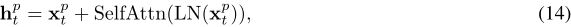

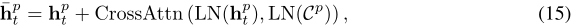

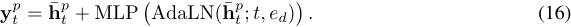
Self-attention preserves the body's temporal motion stream, cross-attention lets sound inform each body branch through audio-memory priors, and AdaLN-style Dense FiLM provides timestep/domain modulation. Thus, MPC recovers motion from sound-informed priors.
Implicit transition matching (ITM). Standard DDPM sampling requires many small denoising steps. To reduce inference cost, we train the denoiser to model large-step reverse transitions. Let t′ < t denote an earlier, less noisy timestep under a large denoising stride. We sample a real transition (xt′ , xt) from the forward diffusion trajectory and obtain a generated transition (ˆxt′ , xt) by sampling ˆxt′ from the DDIM posterior qσ(xt′ | xt, ˆx0) [Song et al., 2021] with the predicted ˆx0. Here a transition denotes a step between noise levels. A conditional discriminator Dϕ predicts whether a transition is real:

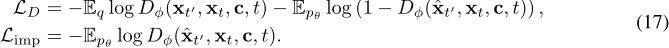
The denoiser is trained with

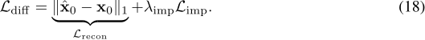
At inference we use K=10 deterministic DDIM steps (η=0; App. F).
4 Experiments
We evaluate VOXPERFORMER on BEAT2, FineDance, held-out performance-switch clips, and the controlled Transition-400 set, covering speech gestures, music-driven dance, and speech-music transitions. These settings test co-speech quality, hand-aware dance generation, and continuous cross-regime performance. We report automatic metrics, qualitative comparisons, ablations, and double-blind user studies for motion fidelity, audio-motion alignment, perceptual naturalness, and transition coherence. Single-domain automatic metrics use the speech-only and FineDance-only checkpoints, with the joint checkpoint also reported on both benchmarks; all user studies, Figs. 6-7, and the transition experiments use the joint checkpoint.
4.1 Datasets and evaluation protocols
BEAT2. For speech-driven gesture evaluation, we follow the EMAGE [Liu et al., 2024a] setting on BEAT2-Standard Speaker 2 (Scott): the official 85%/7.5%/7.5% train/val/test split, 30 FPS motion, and 15 test videos. Our model generates complete motion sequences from the same speech-audio inputs; we convert them to the public BEAT2 body-and-hands format and evaluate them with the official BEAT2 metrics. Table 1 compares the speech-only and joint checkpoints with ten speechdriven gesture baselines.
FineDance. For music-driven dance evaluation, we use a common 17-video FineDance [Li et al., 2023] test subset. All methods in Table 2 are evaluated under our unified protocol: the same train/val/test split, 30 FPS setting, and input music, with VOXPERFORMER, FineNet, EDGE, MotionCraft, and MCM in the 159-D SMPL-X body-hand representation and the other baselines on body motion (App. I). Each method generates the full motion sequence for each test video, and all outputs are evaluated by the same frozen FineDance body and hand evaluators. Methods without valid articulated-hand outputs are included in body metrics but excluded from hand-specific metrics. App. I additionally reports results under the unified FlowerDance protocol (Table 9), where a separate FineDance-only model achieves the second-lowest FIDk among ten methods.
Transition data. We evaluate switching on two held-out sets on which no method is trained: 25 BEAT2-FineDance switch videos (App. J) and Transition-400, a controlled set built from multi-genre AIST++ [Li et al., 2021b] music-dance material and one fixed Kokoro-82M voice [hexgrad, 2025], with 400 sequences of alternating speech (S) and music (M) stages (S-M-S-M or M-S-M-S) over 10 genres and 1,200 switches. Baselines stitch EMAGE or GestureLSM with MotionCraft or FineNet outputs by a hard switch or a 32-frame linear blend; VOXPERFORMER-Seg generates each stage independently with the joint checkpoint, whereas VOXPERFORMER performs one continuous rollout.
User study protocol. We conduct double-blind user studies with 30 participants. For each study, every participant watches 8 randomly sampled comparison groups, with identical rendering settings, hidden method identities, and shuffled display order. Participants rate results on a 1-5 scale and give a preference when applicable. We report mean scores with 95% CIs from participant-level bootstrap; pairwise preferences use two-sided binomial tests, and Likert ratings use paired Wilcoxon signed-rank tests. The Transition-400 study differs: 50 participants rate 50 groups each, with CIs from 10,000 paired video-level bootstrap resamples (App. J).

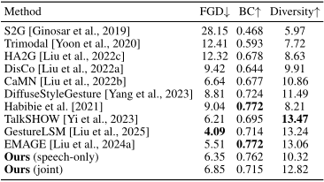
Show table as text
| Method | FGD↓ | BC↑ | Diversity↑ |
|---|---|---|---|
| S2G [Ginosar et al., 2019] | 28.15 | 0.468 | 5.97 |
| Trimodal [Yoon et al., 2020] | 12.41 | 0.593 | 7.72 |
| HA2G [Liu et al., 2022c] | 12.32 | 0.678 | 8.63 |
| DisCo [Liu et al., 2022a] | 9.42 | 0.644 | 9.91 |
| CaMN [Liu et al., 2022b] | 6.64 | 0.677 | 10.86 |
| DiffuseStyleGesture [Yang et al., 2023] | 8.81 | 0.724 | 11.49 |
| Habibie et al. [2021] | 9.04 | 0.772 | 8.21 |
| TalkSHOW [Yi et al., 2023] | 6.21 | 0.695 | 13.47 |
| GestureLSM [Liu et al., 2025] | 4.09 | 0.714 | 13.24 |
| EMAGE [Liu et al., 2024a] | 5.51 | 0.772 | 13.06 |
| Ours (speech-only) | 6.35 | 0.762 | 10.32 |
| Ours (joint) | 6.85 | 0.715 | 12.82 |

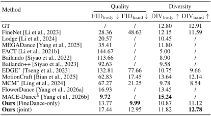
Show table as text
| Method | Quality | Diversity | ||
|---|---|---|---|---|
| FIDbody ↓ | FIDhand ↓ | DIVbody ↑ | DIVhand ↑ | |
| GT | / | / | 12.80 | 12.91 |
| FineNet [Li et al., 2023] | 28.36 | 48.63 | 12.15 | 11.59 |
| Lodge [Li et al., 2024] | 20.57 | / | 10.45 | / |
| MEGADance [Yang et al., 2025] | 35.41 | / | 11.80 | / |
| FACT [Li et al., 2021b] | 144.67 | / | 5.00 | / |
| Bailando [Siyao et al., 2022] | 113.66 | / | 8.90 | / |
| Bailando++ [Siyao et al., 2023] | 92.63 | / | 9.58 | / |
| EDGE∗ [Tseng et al., 2023] | 132.81 | 77.66 | 10.75 | 9.66 |
| MotionCraft [Bian et al., 2025] | 62.83 | 17.45 | 13.64 | 12.14 |
| MCM∗ [Ling et al., 2024] | 67.27 | 21.25 | 9.78 | 8.54 |
| FlowerDance [Yang et al., 2026a] | 16.93 | / | 13.45 | / |
| MACE-Dance§ [Yang et al., 2026b] | 9.72 | / | 15.24 | / |
| Ours (FineDance-only) | 13.77 | 9.99 | 10.87 | 11.12 |
| Ours (joint) | 17.44 | 12.95 | 11.82 | 12.78 |
4.2 Evaluation metrics
We use automatic and user-study metrics for BEAT2, FineDance, and cross-state transitions. For BEAT2, FGD [Yoon et al., 2020] measures motion-distribution fidelity, BC [Li et al., 2021b] measures beat-level audio-motion synchronization, and Diversity [Li et al., 2021a] measures gesture variation. For FineDance, FIDbody and FIDhand [Heusel et al., 2017, Li et al., 2023] measure body-pose and hand-motion fidelity, with body FID computed after removing global translation; DIVbody and DIVhand measure body and hand diversity (definitions in App. E). Transition-400 adds SA (segment-level speech-motion correspondence), FIDB/FIDH (AIST++ body / FineDance hand evaluators), and Skate/Float (foot sliding/floating; App. J). In user studies, Human-like, Align., and Smooth. denote gesture human-likeness, speech-motion alignment, and temporal smoothness; DQ, DS, DC, and Pref. denote dance quality, dance-song synchronization, full-body coherence, and overall preference; TS and Nat. denote transition smoothness and overall naturalness (further criteria in App. J). All ratings use a 1-5 scale, where higher is better; Pref. is reported as a percentage.
4.3 Quantitative evaluation
As shown in Tables 1-2 and Fig. 5, VOXPERFORMER preserves competitive speech-driven gesture quality and improves hand-aware dance fidelity and perceptual scores. On BEAT2, the speech-only checkpoint reaches BC = 0.762, slightly below EMAGE and Habibie et al., while its FGD (6.35) is higher than those of GestureLSM, EMAGE, and TalkSHOW and its diversity is below several specialists; user ratings of the joint checkpoint rank it highest in human-likeness, alignment, and smoothness (Fig. 5a). On FineDance, the body-only MACE-Dance Motion Expert obtains the best FIDbody and DIVbody, while the FineDance-only checkpoint obtains the best FIDhand (9.99) and, among hand-aware methods, the best FIDbody (13.77). The joint checkpoint trades some in-domain fidelity for diversity on both benchmarks (BEAT2 FGD/BC/Div. 6.85/0.715/12.82 vs. 6.35/0.762/10.32), and on FineDance it outperforms all external hand-aware baselines on both FIDs, reaches the highest hand diversity, and obtains the best DQ, DS, DC, and preference scores (Fig. 5b). On the 25-speaker BEAT2 split, a separate speech-only model has the lowest FGD of seven methods (App. G). Offline, the speech-only/joint checkpoints need 62/66ms per 128-frame clip on an A100 (GestureLSM: 37ms) and the FineDance-only/joint ones reach 2088/1984 FPS on an RTX 3090 (FlowerDance: 2028; App. K).
4.4 Qualitative comparisons
Fig. 6 shows that VOXPERFORMER produces richer music-driven choreography than baselines, with clearer arm-body coordination, body turns, hip-driven lower-body accents, and beat-aware transitions, while MEGADance, Lodge, and FineNet show repetitive, over-smoothed, or side-sliding motions. Fig. 7 further shows that VOXPERFORMER maintains a stable support base, grounded body motion, and smooth hand transitions in long-horizon speech generation, whereas GestureLSM (repetitive near-torso gestures) and EMAGE (floating artifacts) both show global drift.

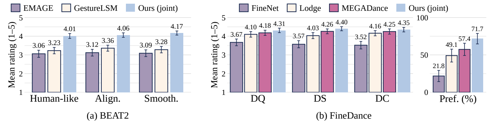

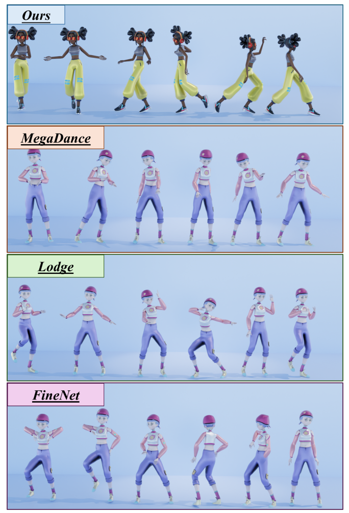

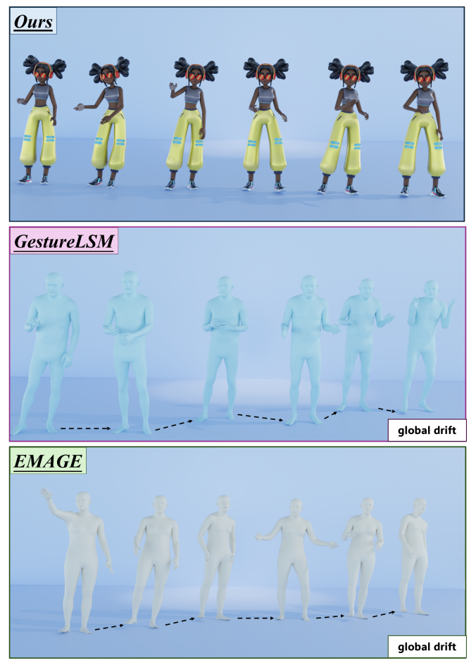

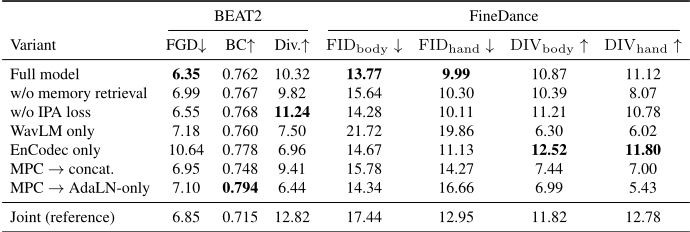
Show table as text
| BEAT2 | FineDance | ||||||
|---|---|---|---|---|---|---|---|
| Variant | FGD↓ | BC↑ | Div.↑ | FIDbody ↓ | FIDhand ↓ | DIVbody ↑ | DIVhand ↑ |
| Full model | 6.35 | 0.762 | 10.32 | 13.77 | 9.99 | 10.87 | 11.12 |
| w/o memory retrieval | 6.99 | 0.767 | 9.82 | 15.64 | 10.30 | 10.39 | 8.07 |
| w/o IPA loss | 6.55 | 0.768 | 11.24 | 14.28 | 10.11 | 11.21 | 10.78 |
| WavLM only | 7.18 | 0.760 | 7.50 | 21.72 | 19.86 | 6.30 | 6.02 |
| EnCodec only | 10.64 | 0.778 | 6.96 | 14.67 | 11.13 | 12.52 | 11.80 |
| MPC → concat. | 6.95 | 0.748 | 9.41 | 15.78 | 14.27 | 7.44 | 7.00 |
| MPC→AdaLN-only | 7.10 | 0.794 | 6.44 | 14.34 | 16.66 | 6.99 | 5.43 |
| Joint (reference) | 6.85 | 0.715 | 12.82 | 17.44 | 12.95 | 11.82 | 12.78 |
4.5 Ablation study
Table 3 isolates memory retrieval, the IPA loss, the audio views, and MPC conditioning (ITM, decoupling, and sampling steps are ablated in App. H). Removing memory retrieval or the IPA loss raises FGD/FID on both benchmarks; memory retrieval especially helps hand diversity, while BC or raw diversity can increase without IPA. WavLM-only is stronger on speech FGD and EnCodeconly on FineDance FID, and combining both gives the best overall fidelity. Replacing MPC with concatenation or AdaLN-only substantially degrades hand FID and diversity, supporting part-specific prior binding.

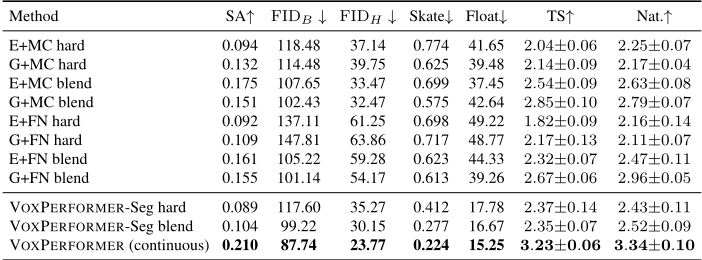
Show table as text
| Method | SA↑ | FIDB ↓ | FIDH ↓ | Skate↓ | Float↓ | TS↑ | Nat.↑ |
|---|---|---|---|---|---|---|---|
| E+MC hard | 0.094 | 118.48 | 37.14 | 0.774 | 41.65 | 2.04±0.06 | 2.25±0.07 |
| G+MC hard | 0.132 | 114.48 | 39.75 | 0.625 | 39.48 | 2.14±0.09 | 2.17±0.04 |
| E+MC blend | 0.175 | 107.65 | 33.47 | 0.699 | 37.45 | 2.54±0.09 | 2.63±0.08 |
| G+MC blend | 0.151 | 102.43 | 32.47 | 0.575 | 42.64 | 2.85±0.10 | 2.79±0.07 |
| E+FN hard | 0.092 | 137.11 | 61.25 | 0.698 | 49.22 | 1.82±0.09 | 2.16±0.14 |
| G+FN hard | 0.109 | 147.81 | 63.86 | 0.717 | 48.77 | 2.17±0.13 | 2.11±0.07 |
| E+FN blend | 0.161 | 105.22 | 59.28 | 0.623 | 44.33 | 2.32±0.07 | 2.47±0.11 |
| G+FN blend | 0.155 | 101.14 | 54.17 | 0.613 | 39.26 | 2.67±0.06 | 2.96±0.05 |
| VOXPERFORMER-Seg hard | 0.089 | 117.60 | 35.27 | 0.412 | 17.78 | 2.37±0.14 | 2.43±0.11 |
| VOXPERFORMER-Seg blend | 0.104 | 99.22 | 30.15 | 0.277 | 16.67 | 2.35±0.07 | 2.52±0.09 |
| VOXPERFORMER (continuous) | 0.210 | 87.74 | 23.77 | 0.224 | 15.25 | 3.23±0.06 | 3.34±0.10 |

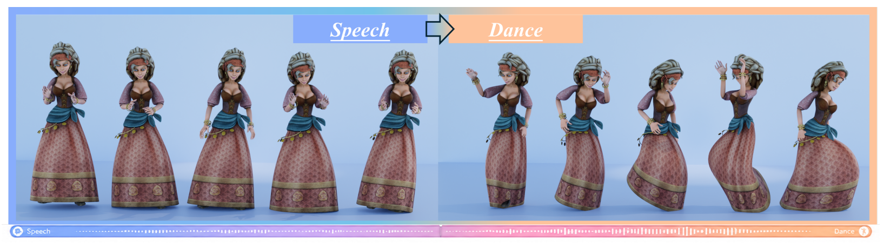
4.6 Continuous performance application
In Table 4, specialist hard switches receive the lowest TS and Nat., and all eight stitched baselines stay below the rating midpoint (3). Against the strongest specialist result in each column (unrounded values), the continuous rollout of VOXPERFORMER improves SA by 20.5%, reduces FIDB/FIDH by 13.3%/26.8% and Skate/Float by 61.1%/59.3%, and improves TS/Nat. by 13.4%/13.1%. Segmented generation with the same checkpoint is clearly weaker (Seg blend vs. continuous: SA 0.104 vs. 0.210, TS 2.35 vs. 3.23), supporting a benefit from retaining cross-regime history; segmentation also stitches the stage boundaries. VOXPERFORMER also leads on the 25 BEAT2-FineDance switch clips (App. J), and Fig. 8 shows one speech-to-dance transition. Fig. 11 (App. L) contrasts the FineDance-only and joint motion-prior spaces (qualitative).
5 Conclusion and Limitations
We presented VOXPERFORMER, a unified audio-to-motion framework that gives sound a body across speech gestures, music-driven dance, and cross-state transitions. By combining part-aware motion priors, audio-to-prior distillation, memory retrieval, and decoupled diffusion, VOXPERFORMER preserves competitive co-speech gesture quality, improves hand-aware dance generation, and enables more coherent speech-music switching than stitching specialist generators.
This work is a step toward generalized audio-driven performance. Model fidelity depends on the coverage and quality of available speech and music motion data, and may degrade for rare styles, longform structures, out-of-distribution audio, or more complex performance regimes. Facial expression, gaze, emotion dynamics, and scene-aware interaction remain future directions. With supervised data, a body-only variant also extends to spoken-instruction motion (App. M).
Broader impact. VOXPERFORMER can lower the cost of animating virtual performers for games, education, and creative tools. Combined with avatar and voice synthesis, it could produce unauthorized or misleading virtual performances and raise consent and copyright concerns about performers' motion, choreography, and music; we recommend licensed data, performer consent, and disclosure of generated content.
Acknowledgments and Disclosure of Funding
We thank the College of Smart Agriculture (College of Artificial Intelligence), Nanjing Agricultural University, for supporting this work. The authors declare no competing interests.
References
Chaitanya Ahuja and Louis-Philippe Morency. Language2Pose: Natural language grounded pose forecasting. In 2019 International Conference on 3D Vision (3DV), pages 719-728. IEEE, 2019.
Uttaran Bhattacharya, Nicholas Rewkowski, Abhishek Banerjee, Pooja Guhan, Aniket Bera, and Dinesh Manocha. Text2Gestures: A transformer-based network for generating emotive body gestures for virtual agents. In 2021 IEEE Virtual Reality and 3D User Interfaces (VR), pages 1-10. IEEE, 2021.
Yuxuan Bian, Ailing Zeng, Xuan Ju, Xian Liu, Zhaoyang Zhang, Wei Liu, and Qiang Xu. MotionCraft: Crafting whole-body motion with plug-and-play multimodal controls. In Proceedings of the AAAI Conference on Artificial Intelligence, volume 39, pages 1880-1888, 2025.
Bohong Chen, Yumeng Li, Yao-Xiang Ding, Tianjia Shao, and Kun Zhou. Enabling synergistic full-body control in prompt-based co-speech motion generation. In Proceedings of the 32nd ACM International Conference on Multimedia, pages 6774-6783. ACM, 2024a.
Junming Chen, Yunfei Liu, Jianan Wang, Ailing Zeng, Yu Li, and Qifeng Chen. DiffSHEG: A diffusion-based approach for real-time speech-driven holistic 3D expression and gesture generation. In Proceedings of the IEEE/CVF Conference on Computer Vision and Pattern Recognition (CVPR), pages 7352-7361, 2024b.
Kang Chen, Zhipeng Tan, Jin Lei, Song-Hai Zhang, Yuan-Chen Guo, Weidong Zhang, and Shi-Min Hu. ChoreoMaster: Choreography-oriented music-driven dance synthesis. ACM Transactions on Graphics, 40(4):1-13, 2021.
Sanyuan Chen, Chengyi Wang, Zhengyang Chen, Yu Wu, Shujie Liu, Zhuo Chen, Jinyu Li, Naoyuki Kanda, Takuya Yoshioka, Xiong Xiao, Jian Wu, Long Zhou, Shuo Ren, Yanmin Qian, Yao Qian, Michael Zeng, Xiangzhan Yu, and Furu Wei. WavLM: Large-scale self-supervised pre-training for full stack speech processing. IEEE Journal of Selected Topics in Signal Processing, 16(6): 1505-1518, 2022.
Xin Chen, Biao Jiang, Wen Liu, Zilong Huang, Bin Fu, Tao Chen, and Gang Yu. Executing your commands via motion diffusion in latent space. In Proceedings of the IEEE/CVF Conference on Computer Vision and Pattern Recognition, pages 18000-18010, 2023.
Yongkang Cheng and Shaoli Huang. HoloGest: Decoupled diffusion and motion priors for generating holistically expressive co-speech gestures. arXiv preprint arXiv:2503.13229, 2025.
Alexandre Défossez, Jade Copet, Gabriel Synnaeve, and Yossi Adi. High fidelity neural audio compression. Transactions on Machine Learning Research, 2023.
Núria Esteve-Gibert and Pilar Prieto. Prosodic structure shapes the temporal realization of intonation and manual gesture movements. Journal of Speech, Language, and Hearing Research, 56(3): 850-864, 2013.
Shiry Ginosar, Amir Bar, Gefen Kohavi, Caroline Chan, Andrew Owens, and Jitendra Malik. Learning individual styles of conversational gesture. In Proceedings of the IEEE/CVF Conference on Computer Vision and Pattern Recognition, pages 3497-3506, 2019.
Chuan Guo, Shihao Zou, Xinxin Zuo, Sen Wang, Wei Ji, Xingyu Li, and Li Cheng. Generating diverse and natural 3D human motions from text. In Proceedings of the IEEE/CVF Conference on Computer Vision and Pattern Recognition (CVPR), pages 5152-5161, 2022.
Ikhsanul Habibie, Weipeng Xu, Dushyant Mehta, Lingjie Liu, Hans-Peter Seidel, Gerard Pons-Moll, Mohamed Elgharib, and Christian Theobalt. Learning speech-driven 3D conversational gestures from video. In Proceedings of the 21st ACM International Conference on Intelligent Virtual Agents, pages 101-108, 2021.
Martin Heusel, Hubert Ramsauer, Thomas Unterthiner, Bernhard Nessler, and Sepp Hochreiter. GANs trained by a two time-scale update rule converge to a local Nash equilibrium. In Advances in Neural Information Processing Systems, volume 30, 2017.
hexgrad. Kokoro-82M. https://huggingface.co/hexgrad/Kokoro-82M, 2025.
Jonathan Ho, Ajay Jain, and Pieter Abbeel. Denoising diffusion probabilistic models. In Advances in Neural Information Processing Systems, volume 33, pages 6840-6851, 2020.
Ruozi Huang, Huang Hu, Wei Wu, Kei Sawada, Mi Zhang, and Daxin Jiang. Dance Revolution: Long-term dance generation with music via curriculum learning. In International Conference on Learning Representations, 2021.
Jinwoo Kim, Heeseok Oh, Seongjean Kim, Hoseok Tong, and Sanghoon Lee. A brand new dance partner: Music-conditioned pluralistic dancing controlled by multiple dance genres. In Proceedings of the IEEE/CVF Conference on Computer Vision and Pattern Recognition, pages 3490-3500, 2022.
Jing Li, Di Kang, Wenjie Pei, Xuefei Zhe, Ying Zhang, Zhenyu He, and Linchao Bao. Audio2Gestures: Generating diverse gestures from speech audio with conditional variational autoencoders. In Proceedings of the IEEE/CVF International Conference on Computer Vision, pages 11293-11302, 2021a.
Ronghui Li, Junfan Zhao, Yachao Zhang, Mingyang Su, Zeping Ren, Han Zhang, Yansong Tang, and Xiu Li. FineDance: A fine-grained choreography dataset for 3D full body dance generation. In Proceedings of the IEEE/CVF International Conference on Computer Vision, pages 10234-10243, 2023.
Ronghui Li, Yuxiang Zhang, Yachao Zhang, Hongwen Zhang, Jie Guo, Yan Zhang, Yebin Liu, and Xiu Li. Lodge: A coarse to fine diffusion network for long dance generation guided by the characteristic dance primitives. In Proceedings of the IEEE/CVF Conference on Computer Vision and Pattern Recognition, pages 1524-1534, 2024.
Ruilong Li, Shan Yang, David A. Ross, and Angjoo Kanazawa. AI Choreographer: Music conditioned 3D dance generation with AIST++. In Proceedings of the IEEE/CVF International Conference on Computer Vision, pages 13401-13412, 2021b.
Zeyu Ling, Bo Han, Yongkang Wong, Han Lin, Mohan Kankanhalli, and Weidong Geng. MCM: Multi-condition motion synthesis framework. In Proceedings of the Thirty-Third International Joint Conference on Artificial Intelligence, IJCAI-24, pages 1083-1091. International Joint Conferences on Artificial Intelligence Organization, 2024.
Haiyang Liu, Naoya Iwamoto, Zihao Zhu, Zhengqing Li, You Zhou, Elif Bozkurt, and Bo Zheng. DisCo: Disentangled implicit content and rhythm learning for diverse co-speech gestures synthesis. In Proceedings of the 30th ACM International Conference on Multimedia, pages 3764-3773, 2022a.
Haiyang Liu, Zihao Zhu, Naoya Iwamoto, Yichen Peng, Zhengqing Li, You Zhou, Elif Bozkurt, and Bo Zheng. BEAT: A large-scale semantic and emotional multi-modal dataset for conversational gestures synthesis. In European Conference on Computer Vision, pages 612-630, 2022b.
Haiyang Liu, Zihao Zhu, Giorgio Becherini, Yichen Peng, Mingyang Su, You Zhou, Xuefei Zhe, Naoya Iwamoto, Bo Zheng, and Michael J. Black. EMAGE: Towards unified holistic co-speech gesture generation via expressive masked audio gesture modeling. In Proceedings of the IEEE/CVF Conference on Computer Vision and Pattern Recognition, pages 1144-1154, 2024a.
Pinxin Liu, Luchuan Song, Junhua Huang, Haiyang Liu, and Chenliang Xu. GestureLSM: Latent shortcut based co-speech gesture generation with spatial-temporal modeling. In Proceedings of the IEEE/CVF International Conference on Computer Vision, 2025.
Xian Liu, Qianyi Wu, Hang Zhou, Yinghao Xu, Rui Qian, Xinyi Lin, Xiaowei Zhou, Wayne Wu, Bo Dai, and Bolei Zhou. Learning hierarchical cross-modal association for co-speech gesture generation. In Proceedings of the IEEE/CVF Conference on Computer Vision and Pattern Recognition, pages 10462-10472, 2022c.
Yifei Liu, Qiong Cao, Yandong Wen, Huaiguang Jiang, and Changxing Ding. Towards variable and coordinated holistic co-speech motion generation. In Proceedings of the IEEE/CVF Conference on Computer Vision and Pattern Recognition (CVPR), pages 1566-1576, 2024b.
Michael McAuliffe, Michaela Socolof, Sarah Mihuc, Michael Wagner, and Morgan Sonderegger. Montreal Forced Aligner: Trainable text-speech alignment using Kaldi. In Interspeech 2017, pages 498-502, 2017.
Georgios Pavlakos, Vasileios Choutas, Nima Ghorbani, Timo Bolkart, Ahmed A. A. Osman, Dimitrios Tzionas, and Michael J. Black. Expressive body capture: 3D hands, face, and body from a single image. In Proceedings of the IEEE/CVF Conference on Computer Vision and Pattern Recognition (CVPR), pages 10975-10985, 2019.
Marija Pranji´c, Thenille Braun Janzen, Nikolina Vukši´c, and Michael H. Thaut. From sound to movement: Mapping the neural mechanisms of auditory-motor entrainment and synchronization. Brain Sciences, 14(11):1063, 2024.
Shannon Proksch, Daniel C. Comstock, Butovens Médé, Alexandria Pabst, and Ramesh Balasubramaniam. Motor and predictive processes in auditory beat and rhythm perception. Frontiers in Human Neuroscience, 14:578546, 2020.
Li Siyao, Weijiang Yu, Tianpei Gu, Chunze Lin, Quan Wang, Chen Qian, Chen Change Loy, and Ziwei Liu. Bailando: 3D dance generation by actor-critic GPT with choreographic memory. In Proceedings of the IEEE/CVF Conference on Computer Vision and Pattern Recognition, pages 11050-11059, 2022.
Li Siyao, Weijiang Yu, Tianpei Gu, Chunze Lin, Quan Wang, Chen Qian, Chen Change Loy, and Ziwei Liu. Bailando++: 3D dance GPT with choreographic memory. IEEE Transactions on Pattern Analysis and Machine Intelligence, 2023.
Jiaming Song, Chenlin Meng, and Stefano Ermon. Denoising diffusion implicit models. In International Conference on Learning Representations, 2021.
Guofei Sun, Yongkang Wong, Zhiyong Cheng, Mohan S. Kankanhalli, Weidong Geng, and Xiangdong Li. DeepDance: Music-to-dance motion choreography with adversarial learning. IEEE Transactions on Multimedia, 23:497-509, 2021.
Guy Tevet, Sigal Raab, Brian Gordon, Yonatan Shafir, Amit H. Bermano, and Daniel Cohen-Or. Human motion diffusion model. In International Conference on Learning Representations, 2023.
Jonathan Tseng, Rodrigo Castellon, and C. Karen Liu. EDGE: Editable dance generation from music. In Proceedings of the IEEE/CVF Conference on Computer Vision and Pattern Recognition, pages 448-458, 2023.
Aaron van den Oord, Oriol Vinyals, and Koray Kavukcuoglu. Neural discrete representation learning. Advances in Neural Information Processing Systems, 30, 2017.
Zunnan Xu, Yukang Lin, Haonan Han, Sicheng Yang, Ronghui Li, Yachao Zhang, and Xiu Li. MambaTalk: Efficient holistic gesture synthesis with selective state space models. In Advances in Neural Information Processing Systems, volume 37, pages 20055-20080, 2024.
An Yang, Baosong Yang, Beichen Zhang, Binyuan Hui, Bo Zheng, Bowen Yu, Chengyuan Li, Dayiheng Liu, Fei Huang, Haoran Wei, Huan Lin, Jian Yang, Jianhong Tu, Jianwei Zhang, Jianxin Yang, Jiaxi Yang, Jingren Zhou, Junyang Lin, Kai Dang, Keming Lu, Keqin Bao, Kexin Yang, Le Yu, Mei Li, Mingfeng Xue, Pei Zhang, Qin Zhu, Rui Men, Runji Lin, Tianhao Li, Tianyi Tang, Tingyu Xia, Xingzhang Ren, Xuancheng Ren, Yang Fan, Yang Su, Yichang Zhang, Yu Wan, Yuqiong Liu, Zeyu Cui, Zhenru Zhang, and Zihan Qiu. Qwen2.5 technical report. arXiv preprint arXiv:2412.15115, 2024a.
Kaixing Yang, Xulong Tang, Ziqiao Peng, Yuxuan Hu, Jun He, and Hongyan Liu. MEGADance: Mixture-of-experts architecture for genre-aware 3D dance generation. In Advances in Neural Information Processing Systems, 2025.
Kaixing Yang, Xulong Tang, Ziqiao Peng, Xiangyue Zhang, Chubin Chen, Xukun Zhou, Puwei Wang, Hongyan Liu, and Jun He. FlowerDance: MeanFlow for efficient and refined 3D dance generation. In Computer Vision - ECCV 2026, volume 17054 of Lecture Notes in Computer Science, pages 56-74. Springer, 2026a.
Kaixing Yang, Jiashu Zhu, Xulong Tang, Ziqiao Peng, Xiangyue Zhang, Puwei Wang, Jiahong Wu, Xiangxiang Chu, Hongyan Liu, and Jun He. MACE-Dance: Motion-appearance cascaded experts for music-driven dance video generation. In ACM SIGGRAPH 2026 Conference Papers. ACM, 2026b.
Sicheng Yang, Zhiyong Wu, Minglei Li, Zhensong Zhang, Lei Hao, Weihong Bao, Ming Cheng, and Long Xiao. DiffuseStyleGesture: Stylized audio-driven co-speech gesture generation with diffusion models. In Proceedings of the Thirty-Second International Joint Conference on Artificial Intelligence (IJCAI), pages 5860-5868, 2023.
Sicheng Yang, Zunnan Xu, Haiwei Xue, Yongkang Cheng, Shaoli Huang, Mingming Gong, and Zhiyong Wu. FreeTalker: Controllable speech and text-driven gesture generation based on diffusion models for enhanced speaker naturalness. In IEEE International Conference on Acoustics, Speech and Signal Processing (ICASSP), pages 7945-7949, 2024b.
Hongwei Yi, Hualin Liang, Yifei Liu, Qiong Cao, Yandong Wen, Timo Bolkart, Dacheng Tao, and Michael J. Black. Generating holistic 3D human motion from speech. In Proceedings of the IEEE/CVF Conference on Computer Vision and Pattern Recognition, pages 469-480, 2023.
Youngwoo Yoon, Bok Cha, Joo-Haeng Lee, Minsu Jang, Jaeyeon Lee, Jaehong Kim, and Geehyuk Lee. Speech gesture generation from the trimodal context of text, audio, and speaker identity. ACM Transactions on Graphics, 39(6):1-16, 2020.
Mingyuan Zhang, Zhongang Cai, Liang Pan, Fangzhou Hong, Xinying Guo, Lei Yang, and Ziwei Liu. MotionDiffuse: Text-driven human motion generation with diffusion model. IEEE Transactions on Pattern Analysis and Machine Intelligence, 2024.
Lingting Zhu, Xian Liu, Xuanyu Liu, Rui Qian, Ziwei Liu, and Lequan Yu. Taming diffusion models for audio-driven co-speech gesture generation. In Proceedings of the IEEE/CVF Conference on Computer Vision and Pattern Recognition, pages 10544-10553, 2023a.
Wentao Zhu, Xiaoxuan Ma, Zhaoyang Liu, Libin Liu, Wayne Wu, and Yizhou Wang. MotionBERT: A unified perspective on learning human motion representations. In Proceedings of the IEEE/CVF International Conference on Computer Vision, pages 15085-15099, 2023b.
Appendix
A More Dance Generation Results
Figure 9 provides additional qualitative examples for dance motion generation. We include a diverse set of dance categories and style combinations. These examples supplement the qualitative results in the main paper and further demonstrate the model's ability to generate stylistically distinct full-body motions across different dance genres.
B Gesture Generation Results
Figure 10 shows additional qualitative results for speech-driven gesture generation. Unlike dance generation, which focuses on rhythmic and stylistic full-body movement, gesture generation emphasizes semantic and prosodic alignment between speech audio and expressive body motions. The examples illustrate that the model produces diverse upper-body and full-body gestures conditioned on spoken input.
C Compute Resources
Unless noted otherwise, training and evaluation were conducted on a single NVIDIA GeForce RTX 5090 GPU with 32 GB memory. The workstation uses an Intel Core Ultra 9 285K CPU with 24 cores and 62 GB RAM. The software environment is Ubuntu 20.04.6 LTS, NVIDIA driver 570.172.08, CUDA 12.8, Python 3.10.20, and PyTorch 2.10.0+cu128. All models were trained and evaluated on a single GPU without distributed training. The runtime comparisons in App. K were measured separately on one NVIDIA A100 (speech) and one NVIDIA GeForce RTX 3090 (dance).

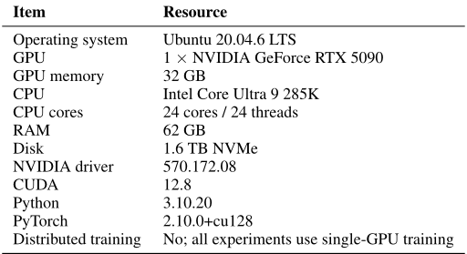
Show table as text
| Item | Resource |
|---|---|
| Operating system | Ubuntu 20.04.6 LTS |
| GPU | 1 × NVIDIA GeForce RTX 5090 |
| GPU memory | 32 GB |
| CPU | Intel Core Ultra 9 285K |
| CPU cores | 24 cores / 24 threads |
| RAM | 62 GB |
| Disk | 1.6 TB NVMe |
| NVIDIA driver | 570.172.08 |
| CUDA | 12.8 |
| Python | 3.10.20 |
| PyTorch | 2.10.0+cu128 |
| Distributed training | No; all experiments use single-GPU training |
Assets and licenses. BEAT2 [Liu et al., 2024a] is distributed for non-commercial research use; FineDance [Li et al., 2023] and SMPL-X [Pavlakos et al., 2019] are released under non-commercial scientific-research licenses; AIST++ [Li et al., 2021b] annotations are licensed under CC BY 4.0, and the underlying AIST Dance Video Database is restricted to academic research; HumanML3D [Guo et al., 2022] is released under the MIT license, with its AMASS motions subject to their own terms. WavLM [Chen et al., 2022], EnCodec [Défossez et al., 2023], and the Montreal Forced Aligner [McAuliffe et al., 2017] are released under the MIT license, and Kokoro-82M [hexgrad, 2025] and Qwen2.5-7B-Instruct [Yang et al., 2024a] under Apache-2.0. All assets are used for non-commercial research in accordance with these terms.
D User Study Instructions
Before participation, each participant was informed that the study evaluates generated human motion videos for research purposes. Participants watched anonymized videos with hidden method identities and shuffled display order. They were asked to rate each result on a 1-5 scale according to human-likeness, audio-motion alignment, smoothness, dance quality, transition continuity, or overall naturalness, depending on the study. No sensitive or personally identifying information was collected. Participants could stop the study at any time. The Transition-400 study used the same instructions, with ratings of transition smoothness and overall naturalness; its protocol is described in App. J. All participants were unpaid volunteers from the university community.

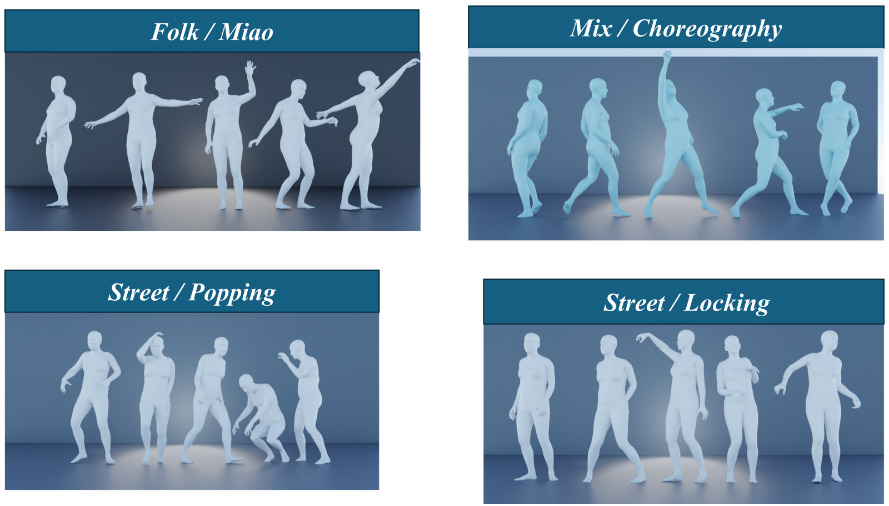
E Evaluation Metrics
BEAT2. We use the official BEAT2 metrics. Fréchet Gesture Distance (FGD) [Yoon et al., 2020] measures how close the distributions of real and generated gestures are:

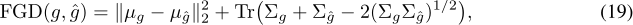
where µg, Σg and µˆ g , Σˆ g are the mean and covariance of the latent features of real gestures g and generated gestures ˆ g, extracted by the pretrained motion autoencoder of the official BEAT2 evaluation; as in prior BEAT2 tables, FGD is reported multiplied by 10. Following EMAGE [Liu et al., 2024a], Diversity [Li et al., 2021a] measures the L1 deviation of generated poses from their mean pose:

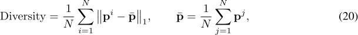
where pi denotes the joint positions in the i-th of N generated frames of a test sequence; the deviations are summed over all test sequences and divided by the total number of frames. Global translation is set to zero, so the metric reflects local motion dynamics, and higher is better. Beat Consistency (BC) [Li et al., 2021b] measures speech-motion synchronization:

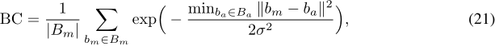
where Bm and Ba are the sets of motion and audio beats (audio beats are speech onsets; motion beats are local minima of the upper-body joint velocity, excluding fingers), and σ is the kernel width of the official evaluation.

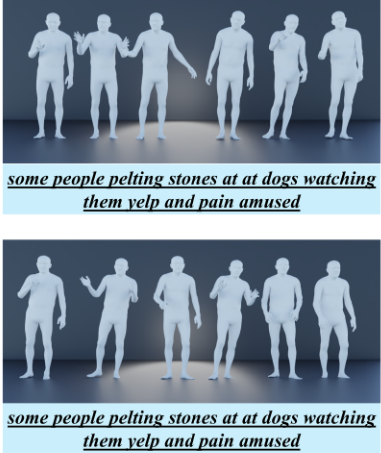
FineDance. FIDbody and FIDhand [Heusel et al., 2017, Li et al., 2023] apply the Fréchet distance of Eq. (19) to the features of the frozen FineDance body and hand evaluators, with body features computed after removing global translation. DIVbody and DIVhand [Li et al., 2021b] are the average pairwise Euclidean distances between the evaluator features of generated sequences:

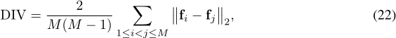
where fi is the body or hand feature of the i-th of M generated sequences. Methods without valid articulated-hand outputs are excluded from the hand metrics.
Other metrics. The Transition-400 metrics (SA, FIDB, FIDH, Skate, and Float) are defined in App. J.
F Implementation Details
Audio features. Frozen WavLM-Base [Chen et al., 2022] layers 1-4 are aggregated by one query token into a 128-D feature; the frozen audio-to-prior encoder maps this feature and a 128-D EnCodec [Défossez et al., 2023] representation to the frame-wise 256-D latent za .
Motion representation and tokenizers. Motion is represented as 159-D SMPL-X parameters at 30 FPS: 39 upper-body, 30 lower-body, and 90 hand dimensions; upper and lower body are packed as 69-D and split in the denoiser. The upper-body, hand, and lower-body tokenizers use independent 256-entry codebooks with 256-D latents. Each checkpoint has its own tokenizers and composer C.
Memory bank. For each 128-frame training window, we take 32-frame chunks with stride 8. The key of a chunk is its mean-pooled, L2-normalized za ; the value stores the complete 32×256 quantized upper-body, hand, and lower-body latent sequences and their code indices. Candidates whose cosine similarity to any retained key exceeds 0.9 are discarded. Each checkpoint builds its bank offline from its own training data (speech-only: BEAT2; FineDance-only: FineDance; joint: both, 54,679 entries). The bank is read-only: no insertion, eviction, EMA, gradients, or write-back. Retrieval searches the whole bank regardless of the domain label di.
Retrieval and code voting. At query time, 32-frame chunks with stride 4 give 25 queries per window. We use exact cosine top-k retrieval with k=4; during training, entries from the query's own video are excluded. Neighbor weights are αt,i = softmaxi(sim(qt, ki)/τ), where sim is cosine similarity and τ=0.1 is the retrieval temperature (Eq. (11)), and overlapping chunk priors are averaged frame-wise. For code voting, let qp i,j be the stored code of neighbor i for part p at frame j. The weighted majority code is ˆ qp j = argmaxc ∑i∈Nk(t) αt,i 1[qp i,j = c], and the agreement api of neighbor i is the fraction of frames with qp i,j = ˆ qp j . The code-consistent subset is N p k (t) = {i ∈ Nk(t) : api ≥ ρ} with ρ=0.5, over which α is renormalized. The conditioning module concatenates za with the retrieved upper-body, hand, and lower-body latents (4×256=1024-D) and routes each part prior to its branch (Eq. (13)).
Windows and prefix. Each window has 128 frames: a 32-frame prefix and a 96-frame target. Longer sequences are generated window by window, each using the last 32 generated frames as its prefix; the first window follows the initialization of the official BEAT2 evaluation. During training only, the normalized prefix is replaced element-wise by independent N(0, I) noise with probability pctx: pctx=0.10 for single-domain models, increased gradually from 0.10 to 0.25 for multi-domain models.
Diffusion generator. The generator is trained from scratch for 200k steps with a 10-step large-stride diffusion process, clean-motion (x0) prediction, and a cosine noise schedule. The first 500 steps warm up the generator; the ITM discriminator Dϕ is then enabled, and the weight λimp of Limp (Eq. (18)) ramps to 0.7 over 500 steps. Inference uses 10 reverse steps with deterministic DDIM updates (η=0); randomness comes only from the initial Gaussian noise of the upper-body, hand, and lower-body branches. Among the three main checkpoints, only the joint one uses the domain token ed.
G BEAT2 25-Speaker Evaluation
To address the single-speaker setting, we train a separate speech-only model on the BEAT2 25-speaker split and compare it with six representative baselines (Table 6). Among these methods, VOXPERFORMER obtains the lowest FGD, showing that its speech-specific result extends beyond Speaker 2; DiffuseStyleGesture obtains the best BC and diversity.

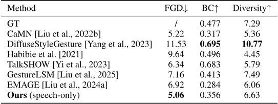
Show table as text
| Method | FGD↓ | BC↑ | Diversity↑ |
|---|---|---|---|
| GT | / | 0.477 | 7.29 |
| CaMN [Liu et al., 2022b] | 5.22 | 0.317 | 5.36 |
| DiffuseStyleGesture [Yang et al., 2023] | 11.53 | 0.695 | 10.77 |
| Habibie et al. [2021] | 9.64 | 0.496 | 4.45 |
| TalkSHOW [Yi et al., 2023] | 6.34 | 0.683 | 5.79 |
| GestureLSM [Liu et al., 2025] | 7.16 | 0.413 | 7.49 |
| EMAGE [Liu et al., 2024a] | 6.92 | 0.284 | 6.06 |
| Ours (speech-only) | 5.06 | 0.356 | 6.63 |
H Additional Ablations
Tables 7 and 8 report the sampling-step and progressive component ablations on BEAT2 (speech-only setting). In Table 7, K is the number of reverse sampling steps; smaller K means larger denoising strides, and K = 10 gives the best FGD and Diversity with stable BC. In Table 8, Disc., Prior, and Dec. respectively add implicit transition matching (ITM), motion-prior conditioning, and part decoupling; each improves the baseline, with the full model achieving the best overall scores. In the analogous progressive study on FineDance (FineDance-only setting), adding decoupling reduces FIDhand from 11.88 to 9.99 and increases DIVhand from 7.98 to 11.12.

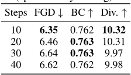
Show table as text
| Steps | FGD ↓ | BC ↑ | Div. ↑ |
|---|---|---|---|
| 10 | 6.35 | 0.762 | 10.32 |
| 20 | 6.46 | 0.763 | 10.31 |
| 30 | 6.64 | 0.763 | 9.97 |
| 40 | 6.62 | 0.762 | 9.98 |

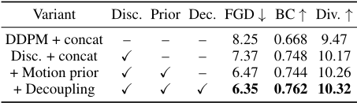
Show table as text
| Variant | Disc. | Prior | Dec. | FGD ↓ | BC ↑ | Div. ↑ |
|---|---|---|---|---|---|---|
| DDPM+ concat | - | - | - | 8.25 | 0.668 | 9.47 |
| Disc. + concat | ✓ | - | - | 7.37 | 0.748 | 10.17 |
| +Motion prior | ✓ | ✓ | - | 6.47 | 0.744 | 10.26 |
| + Decoupling | ✓ | ✓ | ✓ | 6.35 | 0.762 | 10.32 |
I Dance Baseline Protocol
All FineDance comparisons in Table 2 use the same 17-video test subset, train/val/test split, 30 FPS setting, music inputs, and frozen FineDance body and hand evaluators (Sec. 4.1). Methods with articulated hands are converted to the same 159-D body-hand representation. EDGE and MCM are extended with articulated-hand outputs in the same representation (marked ∗ in Table 2). The MotionCraft and MCM rows report their music-to-dance outputs. Methods without valid articulatedhand outputs are excluded from hand metrics.
FlowerDance protocol. For direct comparison with published FineDance results, Table 9 also evaluates VOXPERFORMER under the unified protocol of FlowerDance [Yang et al., 2026a], which follows Lodge [Li et al., 2024] and generates 1024-frame (34.13 s) dances for the test-set music clips. For this protocol, we train a separate FineDance-only model with the FlowerDance train/val/test split; the model generates all 1024 frames of each dance from the music, and ground-truth motion is used only for evaluation. FIDk/FIDg and DIVk/DIVg use kinetic and geometric body-joint features [Li et al., 2021b], FSR measures foot sliding [Li et al., 2024], and BAS is the beat alignment score [Li et al., 2021b]; all six metrics are computed with the FlowerDance evaluation code. Ground-truth and baseline values are taken from FlowerDance, and the MACE-Dance Motion Expert values from its paper [Yang et al., 2026b], which reports the same ground-truth values; Table 12 reports efficiency for the same 1024-frame setting. VOXPERFORMER achieves the second-lowest FIDk, after the MACE-Dance Motion Expert.

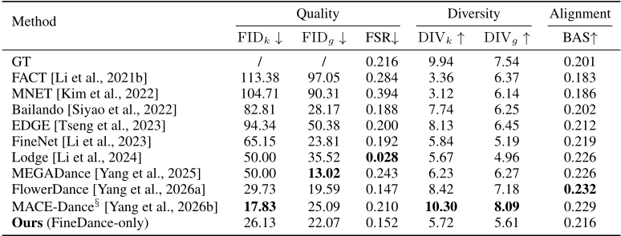
Show table as text
| Method | Quality | Diversity | Alignment | |||
|---|---|---|---|---|---|---|
| FIDk ↓ | FIDg ↓ | FSR↓ | DIVk ↑ | DIVg ↑ | BAS↑ | |
| GT | / | / | 0.216 | 9.94 | 7.54 | 0.201 |
| FACT [Li et al., 2021b] | 113.38 | 97.05 | 0.284 | 3.36 | 6.37 | 0.183 |
| MNET [Kim et al., 2022] | 104.71 | 90.31 | 0.394 | 3.12 | 6.14 | 0.186 |
| Bailando [Siyao et al., 2022] | 82.81 | 28.17 | 0.188 | 7.74 | 6.25 | 0.202 |
| EDGE [Tseng et al., 2023] | 94.34 | 50.38 | 0.200 | 8.13 | 6.45 | 0.212 |
| FineNet [Li et al., 2023] | 65.15 | 23.81 | 0.192 | 5.84 | 5.19 | 0.219 |
| Lodge [Li et al., 2024] | 50.00 | 35.52 | 0.028 | 5.67 | 4.96 | 0.226 |
| MEGADance [Yang et al., 2025] | 50.00 | 13.02 | 0.243 | 6.23 | 6.27 | 0.226 |
| FlowerDance [Yang et al., 2026a] | 29.73 | 19.59 | 0.147 | 8.42 | 7.18 | 0.232 |
| MACE-Dance§ [Yang et al., 2026b] | 17.83 | 25.09 | 0.210 | 10.30 | 8.09 | 0.229 |
| Ours (FineDance-only) | 26.13 | 22.07 | 0.152 | 5.72 | 5.61 | 0.216 |
J Transition Evaluation Details
25-clip BEAT2-FineDance study. The 25 held-out performance-switch videos pair BEAT2 Speaker-2 speech segments with FineDance music, covering both speech-to-music and music-tospeech switches. All methods are tested on the same mixed audio inputs, and stitching baselines are built from the same specialist speech and dance generations. Table 10 reports the corresponding user study (Sec. 4.1). MD-S, FS-S, TC, and ARC denote boundary motion-continuity score, foot-stability score, perceived transition continuity, and audio-regime consistency; TS and Nat. denote transition smoothness and overall naturalness. Specialist hard switches suffer from boundary breaks, while linear blending improves local smoothness but remains below VOXPERFORMER in continuity and naturalness. VOXPERFORMER achieves the best transition scores and stays at or above the acceptable midpoint (3/5) across all criteria.

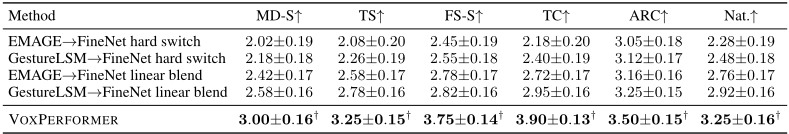
Show table as text
| Method | MD-S↑ | TS↑ | FS-S↑ | TC↑ | ARC↑ | Nat.↑ |
|---|---|---|---|---|---|---|
| EMAGE→FineNet hard switch | 2.02±0.19 | 2.08±0.20 | 2.45±0.19 | 2.18±0.20 | 3.05±0.18 | 2.28±0.19 |
| GestureLSM→FineNet hard switch | 2.18±0.18 | 2.26±0.19 | 2.55±0.18 | 2.40±0.19 | 3.12±0.17 | 2.48±0.18 |
| EMAGE→FineNet linear blend | 2.42±0.17 | 2.58±0.17 | 2.78±0.17 | 2.72±0.17 | 3.16±0.16 | 2.76±0.17 |
| GestureLSM→FineNet linear blend | 2.58±0.16 | 2.78±0.16 | 2.82±0.16 | 2.95±0.16 | 3.25±0.15 | 2.92±0.16 |
| VOXPERFORMER | 3.00±0.16† | 3.25±0.15† | 3.75±0.14† | 3.90±0.13† | 3.50±0.15† | 3.25±0.16† |
Transition-400 construction. Speech is synthesized with hexgrad/Kokoro-82M v1.0 [hexgrad, 2025] (voice am_adam, lang_code="a", speed 1.0, 24kHz output) for both SA-evaluator training and Transition-400; this fixed American-English male synthetic voice controls for timbre. Qwen2.5-7B-Instruct [Yang et al., 2024a] generates candidate scripts from dance-genre, speechenergy/amplitude, and order prompts; the scripts are manually revised and synthesized with the same Kokoro configuration. Music-dance stages come from multi-genre AIST++ material. Each of the 10 genres has 20 sequences per order (S-M-S-M and M-S-M-S), giving 10×2×20 = 400 sequences with four ≈7 s stages and three transitions each (1,200 boundaries). All inputs and boundaries are frozen before evaluation, and all AIST++ motions, synthesized speech, compositions, and orders are excluded from generator training, fine-tuning, and model selection.
Metrics. The first stage is a warm-up and is excluded from SA and FID, but the first transition is retained. SA uses post-warm-up speech stages, body/hand FID use post-warm-up music stages, and Skate/Float use all post-warm-up motion; transition-adjacent frames remain, so each segment also measures recovery to the target distribution and rhythm. For the SA evaluator, original and synthesized speech of each BEAT2 Speaker-2 training utterance are aligned to the same normalized transcript with the Montreal Forced Aligner [McAuliffe et al., 2017] (english_us_arpa). Matching phoneme intervals are paired monotonically; 100-Hz synthesized log-Mel features are resampled within each interval to the original timestamps (silences separately) and then to 30Hz, and invalid matches are excluded. A Transformer audio encoder Va and a motion-VAE encoder Vm are trained with InfoNCE on the resulting synthesized-speech-motion pairs and frozen; Transition-400 and generated outputs are excluded from their training. We compute

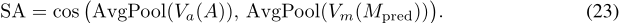
Because both embeddings are average-pooled, SA measures segment-level correspondence. FIDB uses a newly trained AIST++ body evaluator after real and generated motions are converted identically. Since AIST++ has no articulated-hand annotations, FIDH reuses the frozen FineDance hand evaluator and measures out-of-distribution fidelity to the FineDance hand distribution. Skate measures toe displacement during contact; Float measures toe-to-ground distance, with the ground placed 0.5 cm above the sequence minimum.
Baselines and controls. EMAGE and GestureLSM speech outputs are paired with MotionCraft and FineNet music-to-dance outputs by hard switching or a fixed 32-frame linear blend, giving eight baselines. Before blending, the incoming root translation and yaw are aligned; body, hands, and root trajectory are linearly interpolated without extra optimization or smoothing. The VOXPERFORMERSeg controls use the same joint checkpoint but generate homogeneous stages independently, resetting cross-stage history, and are stitched by the same hard switch or blend; VOXPERFORMER performs one continuous rollout and retains history. For VOXPERFORMER and VOXPERFORMER-Seg, the domain token follows the stage labels of the frozen schedule.
User study. Fifty participants each rate 50 groups (2,500 participant-sequence groups). Each group contains the 11 anonymized outputs with identical audio, boundaries, and rendering in randomized order; participants view three boundary-centered 3 s excerpts (about 9 s in total) and rate TS and Nat. on a 1-5 scale. We average ratings per sequence and method and compute percentile 95% CIs with 10,000 paired video-level bootstrap resamples of the 400 sequence vectors, retaining all 11 methods; Table 4 reports symmetric half-widths.
K Efficiency
Speech. Following GestureLSM [Liu et al., 2025], we report the average inference time per sentence (AIST) on one NVIDIA A100 with batch size 1 and identical timing boundaries for all methods (Table 11). In this evaluation setup, a "sentence" is one fixed-length 128-frame test clip (4.27 s at 30FPS), and AIST is the synchronized wall-clock time to generate the complete clip. As a sanity check, our reproduced GestureLSM time (0.037 s) is close to its reported 0.039 s. GestureLSM remains the fastest speech-specialized model; the joint checkpoint is 6.5% slower than the speech-only checkpoint (66 vs. 62ms).
Dance. Following FlowerDance [Yang et al., 2026a] and MACE-Dance [Yang et al., 2026b], we report FPS = 1024/T, where T is the inference time for one 1024-frame FineDance sequence (34.13 s at 30FPS), on one NVIDIA GeForce RTX 3090 with batch size 1 and identical timing boundaries (Table 12); FPS counts generated motion frames per second. For MACE-Dance, we time only the Motion Expert, since the Appearance Expert performs video synthesis. Our FlowerDance and MACE-Dance reruns (2028 and 794 FPS) are close to their published 2008 and 770 FPS. The joint checkpoint is within 2.2% of FlowerDance (1984 vs. 2028 FPS), reaches 2.50× the throughput of the MACE-Dance Motion Expert, and retains 95.0% of the FineDance-only throughput (2088 FPS).
Scope. These runtimes are measured on different GPUs from the RTX 5090 used for training and accuracy evaluation (App. C). Table 11 reports offline fixed-window generation time, which differs from the causal per-chunk latency that streaming methods report under method-specific chunk sizes, look-ahead, and buffering.

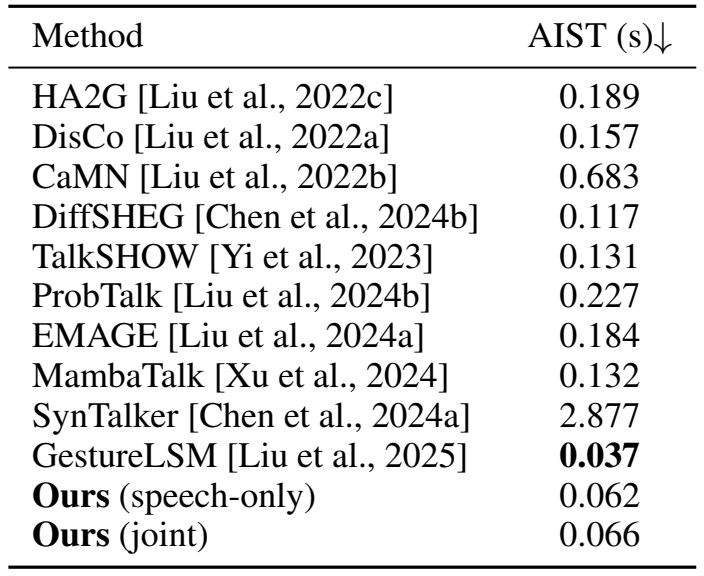
Show table as text
| Method | AIST (s)↓ |
|---|---|
| HA2G [Liu et al., 2022c] | 0.189 |
| DisCo [Liu et al., 2022a] | 0.157 |
| CaMN [Liu et al., 2022b] | 0.683 |
| DiffSHEG [Chen et al., 2024b] | 0.117 |
| TalkSHOW [Yi et al., 2023] | 0.131 |
| ProbTalk [Liu et al., 2024b] | 0.227 |
| EMAGE [Liu et al., 2024a] | 0.184 |
| MambaTalk [Xu et al., 2024] | 0.132 |
| SynTalker [Chen et al., 2024a] | 2.877 |
| GestureLSM [Liu et al., 2025] | 0.037 |
| Ours (speech-only) | 0.062 |
| Ours (joint) | 0.066 |

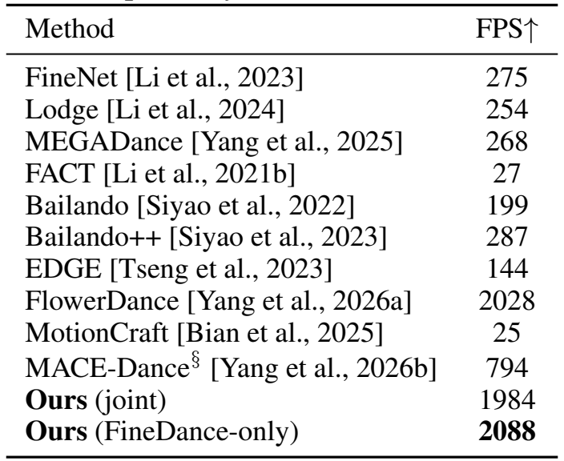
Show table as text
| Method | FPS↑ |
|---|---|
| FineNet [Li et al., 2023] | 275 |
| Lodge [Li et al., 2024] | 254 |
| MEGADance [Yang et al., 2025] | 268 |
| FACT [Li et al., 2021b] | 27 |
| Bailando [Siyao et al., 2022] | 199 |
| Bailando++ [Siyao et al., 2023] | 287 |
| EDGE [Tseng et al., 2023] | 144 |
| FlowerDance [Yang et al., 2026a] | 2028 |
| MotionCraft [Bian et al., 2025] | 25 |
| MACE-Dance§ [Yang et al., 2026b] | 794 |
| Ours (joint) | 1984 |
| Ours (FineDance-only) | 2088 |
L Shared Motion-Prior Visualization
Figure 11 contrasts the separate and joint motion-prior spaces at a speech-to-dance handoff. If separate specialists were chained at such a handoff, the dance specialist would receive speech motion as its prefix; this motion is unseen during its training and lies largely apart from its dance data. Under the joint checkpoint, the same clips partially overlap. The visualization is qualitative and complements the transition results in Sec. 4.6.
M Supervised Extension to Spoken-Instruction Motion
To test whether the architecture extends to a third audio-conditioned domain with supervised data, we add a HumanML3D [Guo et al., 2022] spoken-instruction experiment, where audio describes actions such as walking, turning, and jumping. Official captions are synthesized with the same Kokoro configuration as Transition-400; captions provide the TTS content and the evaluator text, and the generator receives the synthesized speech. We train three body-only auxiliary models: HumanML3D, HumanML3D+BEAT2, and HumanML3D+BEAT2+FineDance, where BEAT2 is the original Speaker-2 setting. Because HumanML3D lacks articulated fingers, all three use a common 30-FPS upper/lower-body representation and omit the hand tokenizer, bank values, and denoising branch. Each model uses a read-only bank from its own training sets with the same key construction and cosine top-k retrieval, and the domain-token set adds an instruction token (instruction/speech for HumanML3D+BEAT2; instruction/speech/music for the three-domain model).
![Figure 11: Separate vs. joint motion-prior space (qualitative). t-SNE of pooled whole-body motion anchors ¯zm (Eq. (7)), showing the same 50 speech clips (BEAT2, Speaker 2) and 50 dance clips (FineDance) in both panels. (a) Separate: both domains are encoded by the FineDance-only checkpoint, i.e., the specialist that would receive the speech prefix at a speech-to-dance handoff if separate models were chained; speech motion is unseen during its training. (b) Joint: the same clips are encoded by the joint checkpoint. Each panel is a separate t-SNE fit, so neighborhoods are compared within each panel; ellipses are visual guides (2σ covariance).](assets/0251-picture.png)
All HumanML3D sequences begin with the same neutral 32-frame context, which metrics exclude. Each 96-frame suffix starts from fresh Gaussian noise, and longer motions use the final 32 generated frames as the next context while retaining the spoken-instruction audio features. Outputs are cropped to the target duration, mapped to the HumanML3D 22-joint skeleton, resampled from 30 to 20 FPS, and converted by the official pipeline to the 263-D evaluator representation.
Table 13 reports the results. Text-conditioned rows are published values (MDM: its official post-bug-fix result); our reruns of JL2P, Text2Gestures, T2M, and MDM with the same frozen evaluator recovered values close to them. Because the conditioning modalities differ, these rows indicate metric scale. The HumanML3D-only model gives the best alignment and fidelity among the three auxiliary models; adding BEAT2 and FineDance yields the expected specialist-multi-domain trade-off, while the three-domain model reaches R-Prec. 0.677 and FID 0.567. Diversity is judged by proximity to Real (9.503), so 10.552 indicates over-dispersion.

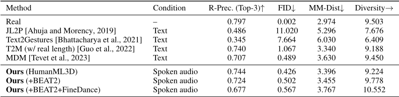
Show table as text
| Method | Condition | R-Prec. (Top-3)↑ | FID↓ | MM-Dist↓ | Diversity→ |
|---|---|---|---|---|---|
| Real | - | 0.797 | 0.002 | 2.974 | 9.503 |
| JL2P [Ahuja and Morency, 2019] | Text | 0.486 | 11.020 | 5.296 | 7.676 |
| Text2Gestures [Bhattacharya et al., 2021] | Text | 0.345 | 7.664 | 6.030 | 6.409 |
| T2M (w/ real length) [Guo et al., 2022] | Text | 0.740 | 1.067 | 3.340 | 9.188 |
| MDM [Tevet et al., 2023] | Text | 0.707 | 0.489 | 3.630 | 9.450 |
| Ours (HumanML3D) | Spoken audio | 0.744 | 0.426 | 3.396 | 9.224 |
| Ours (+BEAT2) | Spoken audio | 0.724 | 0.502 | 3.455 | 9.778 |
| Ours (+BEAT2+FineDance) | Spoken audio | 0.677 | 0.567 | 3.767 | 10.552 |
NeurIPS Paper Checklist
1. Claims
Question: Do the main claims made in the abstract and introduction accurately reflect the paper's contributions and scope?
Answer: [Yes]
Justification: The abstract and introduction state the paper's scope: VOXPERFORMER is a unified audio-to-motion framework for speech-driven gestures, music-driven dance, and cross-state transitions. The experimental claims are supported by the BEAT2, FineDance, ablation, and transition studies in Section 4.
2. Limitations
Question: Does the paper discuss the limitations of the work performed by the authors?
Answer: [Yes]
Justification: Section 5 explicitly discusses limitations, including dependence on trainingdata coverage, rare styles, long-form structures, out-of-distribution audio, facial expression, gaze, emotion dynamics, and scene-aware interaction.
3. Theory assumptions and proofs
Question: For each theoretical result, does the paper provide the full set of assumptions and a complete (and correct) proof?
Answer: [N/A]
Justification: The equations in Section 3 define the proposed model and training objectives.
4. Experimental result reproducibility
Question: Does the paper fully disclose all the information needed to reproduce the main experimental results of the paper to the extent that it affects the main claims and/or conclusions of the paper, regardless of whether the code and data are provided or not?
Answer: [Yes]
Justification: Sections 3 and 4 describe the model components, datasets, evaluation protocols, metrics, baselines, ablations, and user-study protocol. Appendix C reports the compute environment used for training and evaluation.
5. Open access to data and code
Question: Does the paper provide open access to the data and code, with sufficient instructions to faithfully reproduce the main experimental results, as described in supplemental material?
Answer: [No]
Justification: The method, datasets, metrics, and evaluation protocols are described in Sections 3-4 and Appendices E, F, I, and J.
6. Experimental setting/details
Question: Does the paper specify all the training and test details, e.g., data splits, hyperparameters, how they were chosen, type of optimizer, necessary to understand the results?
Answer: [Yes]
Justification: The paper specifies the main experimental settings, including BEAT2 and FineDance splits, frame rate, evaluation windows, output representation, metrics, compared methods, sampling steps, and the single-GPU compute environment in Sections 3.4 and 4.14.5 and Appendices C, F, and H.
7. Experiment statistical significance
Question: Does the paper report error bars suitably and correctly defined or other appropriate information about the statistical significance of the experiments?
Answer: [Yes]
Justification: The user studies report mean scores with 95% confidence intervals, and Section 4.1 states that the intervals are computed by participant-level bootstrap (Transition400: 10,000 paired video-level bootstrap resamples). Pairwise preferences are tested with two-sided binomial tests, and Likert ratings are tested with paired Wilcoxon signed-rank tests.
8. Experiments compute resources
Question: For each experiment, does the paper provide sufficient information on the computer resources, including type of compute workers, memory, and time of execution, needed to reproduce the experiments?
Answer: [Yes]
Justification: Appendix C reports the GPU, GPU memory, CPU, RAM, operating system, NVIDIA driver, CUDA version, Python version, PyTorch version, and single-GPU training setting. Appendix K reports inference runtimes on one NVIDIA A100 (speech) and one NVIDIA GeForce RTX 3090 (dance).
9. Code of ethics
Question: Does the research conducted in the paper conform, in every respect, with the NeurIPS Code of Ethics?
Answer: [Yes]
Justification: The research uses public motion/audio datasets and anonymous perceptual ratings of rendered motion videos, and it targets benign virtual-character animation and creative content generation applications.
10. Broader impacts
Question: Does the paper discuss both potential positive societal impacts and negative societal impacts of the work performed?
Answer: [Yes]
Justification: The Broader impact paragraph in Section 5 discusses positive uses (lowercost animation of virtual performers for games, education, and creative tools) and risks (unauthorized or misleading virtual performances when combined with avatar and voice synthesis, and consent and copyright concerns about performers' motion, choreography, and music), together with mitigations: licensed data, performer consent, and disclosure of generated content.
11. Safeguards
Question: Does the paper describe safeguards that have been put in place for responsible release of data or models that have a high risk for misuse, e.g., pre-trained language models, image generators, or scraped datasets?
Answer: [N/A]
Justification: The paper presents a motion-generation method evaluated on public datasets.
12. Licenses for existing assets
Question: Are the creators or original owners of assets, e.g., code, data, models, used in the paper, properly credited and are the license and terms of use explicitly mentioned and properly respected?
Answer: [Yes]
Justification: The paper cites the existing public datasets and baseline methods used in the experiments, and the Assets and licenses paragraph of Appendix C states the licenses and terms of use of the datasets, models, and tools used.
13. New assets
Question: Are new assets introduced in the paper well documented and is the documentation provided alongside the assets?
Answer: [N/A]
Justification: Transition-400 and the 25 BEAT2-FineDance switch clips are internal evaluation sets built for this paper; Section 4.1 and Appendix J document their construction.
14. Crowdsourcing and research with human subjects
Question: For crowdsourcing experiments and research with human subjects, does the paper include the full text of instructions given to participants and screenshots, if applicable, as well as details about compensation, if any?
Answer: [Yes]
Justification: Section 4.1 describes the double-blind user-study protocol, including participant count, randomized comparison groups, hidden method identities, shuffled display order, rating scale, confidence intervals, and statistical tests. Appendix D provides the participant instructions, reports that all participants were unpaid volunteers from the university community, and states that no sensitive or personally identifying information was collected.
15. Institutional review board (IRB) approvals or equivalent for research with human subjects
Question: Does the paper describe potential risks incurred by study participants, whether such risks were disclosed to the subjects, and whether Institutional Review Board approvals, or an equivalent approval/review based on the requirements of your country or institution, were obtained?
Answer: [No]
Justification: The study involved anonymous perceptual ratings of generated videos only. Participants were informed of the study procedure before participation, and no sensitive or personally identifying information was collected.
16. Declaration of LLM usage
Question: Does the paper describe the usage of LLMs if it is an important, original, or non-standard component of the core methods in this research? Note that if the LLM is used only for writing, editing, or formatting purposes and does not impact the core methodology, scientific rigor, or originality of the research, declaration is not required.
Answer: [Yes]
Justification: Qwen2.5-7B-Instruct is used only to generate candidate scripts for the Transition-400 evaluation speech; the scripts are manually revised before synthesis with Kokoro-82M (Appendix J).